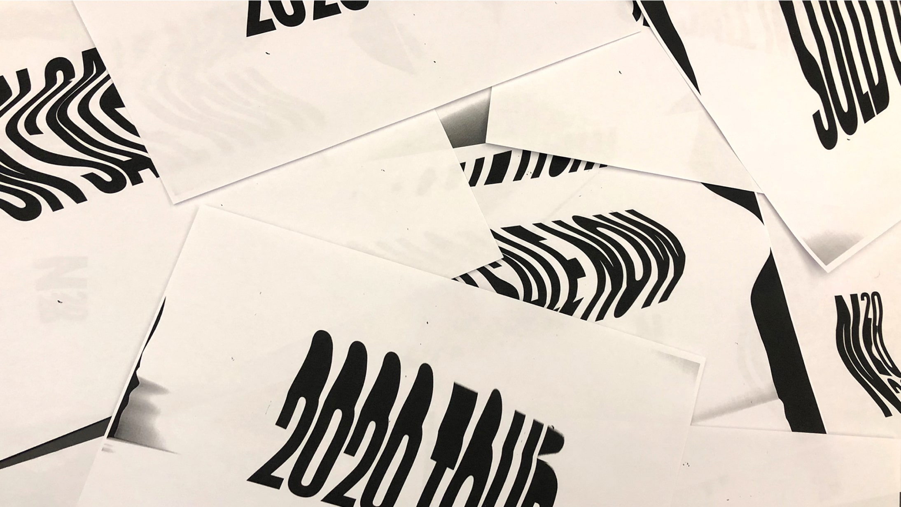
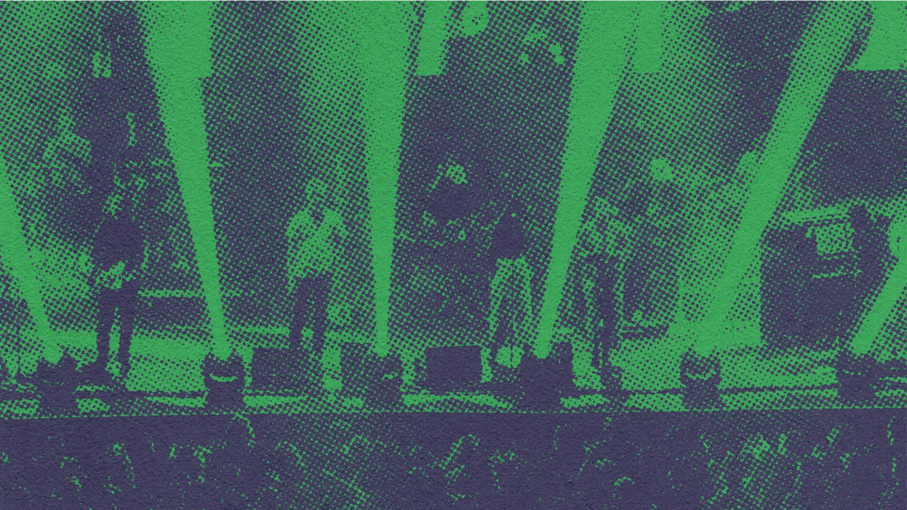
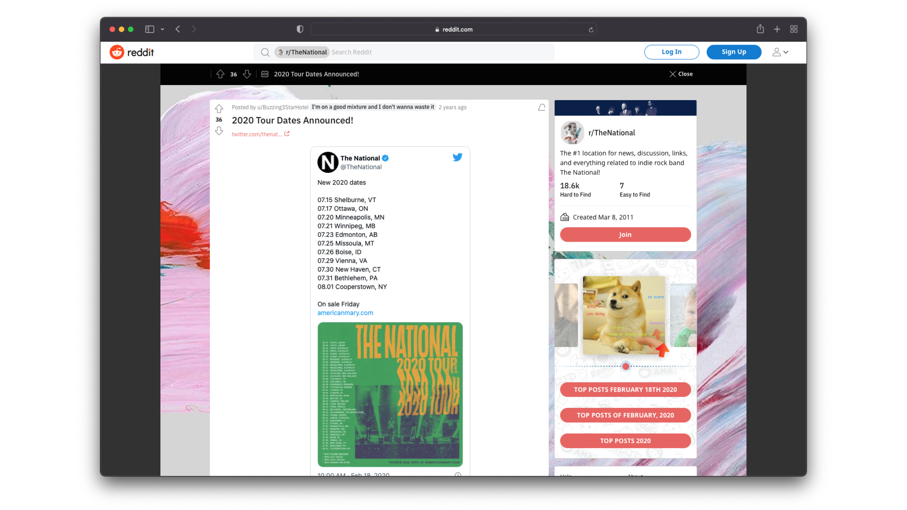

I had a short stint at The Collected Works and loved it. They have some of the most interesting projects in music and tech and just are rad people. I felt very lucky to spend some time in their NYC office.
After finishing the tour for the album, “I Am Easy To Find”, The National wanted to create a new look for their 2020 tour. This tour would not be connected to a specific album and needed a unique voice.
The concept for the branding was inspired by their prior album, "Sleep Well Beast", which was a perfect example of a straight-laced, corporate look you might see in your average day job. We used tools that would exist in an office (mainly a xerox machine) to create a more DIY, rough feeling. With a xerox machine, we warped and stretched the type until we came across elements we thought would be interesting to use.
I have loved The National since I was a kid and it was an amazing experience working on this project.
The initial pieces of this campaign were released, but unfortunately COVID canceled the tour.
Role:
Designer
Disciplines:
Brand

Xerox copies used for logo and other design elements. We dragged type across the copier to create the warped text.

Close up to the halftoning.

“I'm digging the design, especially the font choice. can't wait to get it on a poster! (or shirt! or both!)” - Reddit Commenter